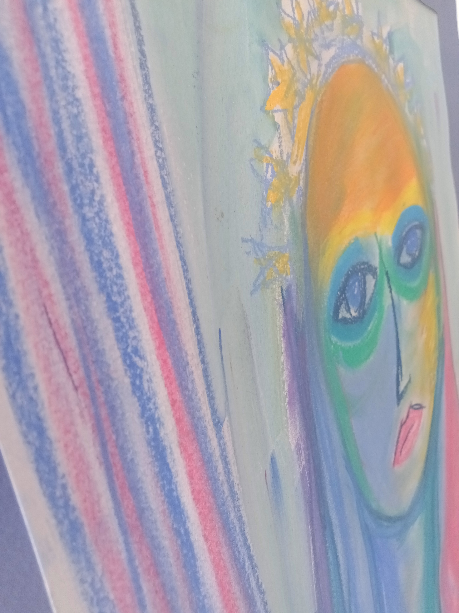
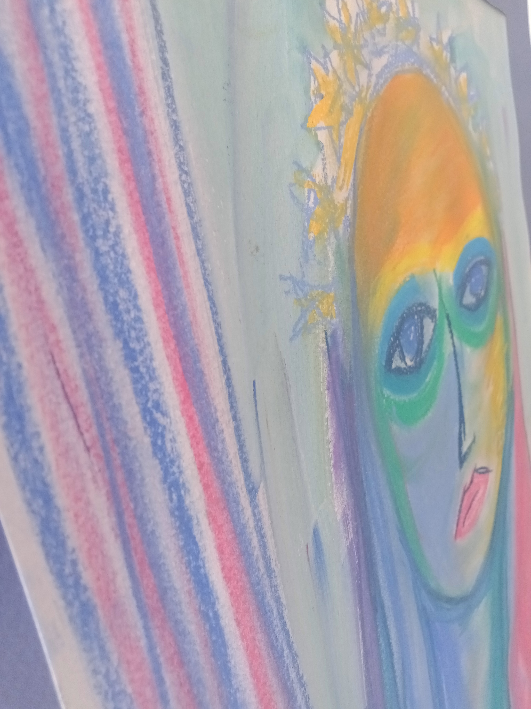

Que se passe-t-il en psychothérapie ?
Vous allez à la rencontre de vous-même ….
Parfois, vos difficultés actuelles font suite à un événement récent, comme la disparition d’un être cher ou la perte d’emploi. D’autres fois, elles ont un versant actuel et un passé, comme cette rupture de relation amoureuse que vous venez de vivre, et qui vous renvoie à d’autres échecs relationnels. Quelle que soit le cas, comprendre la nature de vos difficultés vous demandera un travail d’exploration de votre monde intérieur.
Cette exploration intérieure vous permettra de découvrir et d’entrer en contact avec plein de parties de vous-mêmes. Il y a celles que vous aimez, celles que vous aimez moins ou pas du tout, et celles dont vous ne soupçonnez même pas l’existence. Celles dotées de créativité et celles qui aiment les sentiers battus. Il y a des parties de vous-mêmes qui vous ont aidé à traverser des temps lointains, voire à survivre lors de moments critiques, mais qui aujourd’hui, face aux défis de votre vie actuelle, vous limitent.
… pour voir ce qui est important pour vous, ce que vous voulez changer
En vous comprenant, en acceptant la personne que vous êtes aujourd’hui, vous pouvez aller plus librement vers la personne que vous voulez être. Changer supposera d’interrompre les habitudes, les façons de faire qui ne vous servent plus et les remplacer par des modalités qui promeuvent la résilience et l’épanouissement. Et si vous visez un travail encore plus en profondeur, je vous accompagnerai à comprendre le rôle que vous jouez dans votre propre vie et à vous poser la question « est-ce que ce rôle me convient ? » Y répondre vous permettra d’aller vers une affirmation plus authentique de vous-même.


 
